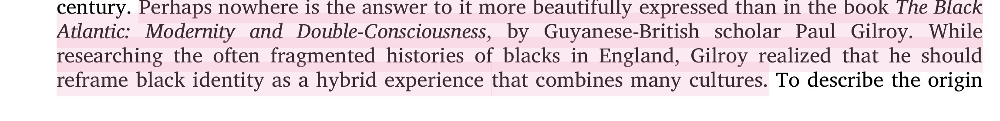

Touring July 5–7. Thoughtful inquiries are welcome in advance. Please allow time for a proper introduction before the dates approach.
Begin InquiryFor Los Angeles dates, I’m best suited to those who value discretion, polish, warmth, and a naturally elegant presence in thoughtfully arranged settings.
Los Angeles is one of the cities I’m well suited for when the plans feel aligned. Whether the date involves a beautiful dinner, hotel time, a polished social appearance, a celebration, or a weekend itinerary with intention, I appreciate experiences that feel discreet, calm, and well chosen from the start.
For those searching for a Los Angeles travel companion with a petite, polished, athletic, and warmly feminine presence, my style tends to resonate most with people who value atmosphere, emotional intelligence, and an experience that feels natural rather than forced.
If you’re reaching out for Los Angeles time, include your preferred date, location, length of time, and the kind of experience you have in mind. The more thoughtful the introduction, the easier it is to review properly.
Because travel works best when it’s planned with care, advance notice is always appreciated.
Begin with a complete inquiry
My energy is best matched with those who appreciate feminine softness, thoughtful pacing, emotional intelligence, and a kind of luxury that feels understated rather than loud.
West Coast travel minimums, deposit policy, and booking details are listed on the Experience page. Reviewing those first tends to make the process smooth and straightforward.
View experience & ratesYou can return to the gallery, read through the FAQ, or begin a thoughtful introduction whenever it feels aligned.
Begin with a complete inquiry and let the details be handled thoughtfully from there.